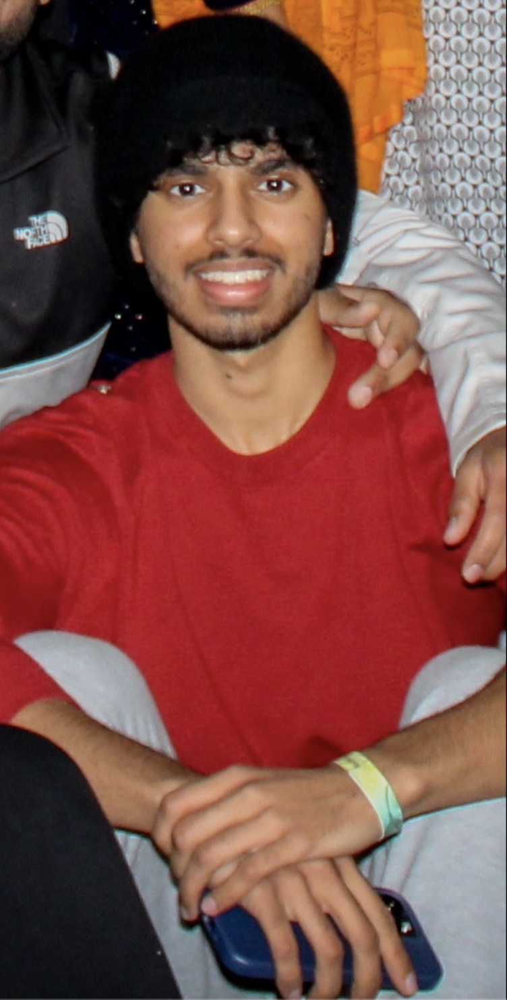

About Me
Growing up, I was always drawn to riddles and puzzles, and my passion for problem-solving led me to a future in software development. As a curious person, I have always been eager to try new things and explore new avenues. My love for coding is paralleled only by my love for music. I have been playing the guitar for as long as I can remember and music has always been a huge part of my life. I also love playing sports, and basketball is one of my favorite activities. Whether I am on the court or in front of my computer, I am always pushing myself to be better and to take on new challenges.
Recently, I had the opportunity to put my skills to the test during an internship at Marathon Petroleum, where I learned the importance of teamwork and adapting to different work environments. I was responsible for a project that required me to work with a team of people from different backgrounds and skill sets. I quickly learned the value of communication, collaboration, and adaptability, and I was able to apply these skills to help my team achieve success.
In addition to my love for coding, music, and sports, I have also been a founding member of a company that deals in imported Faux Mink Lashes. Our aim is to enter the ecommerce beauty sector with affordable, high-quality products. Balancing business management, client relations, and academics requires detail-oriented time management skills, which I have honed over the years. I also administer the cloud-based systems for company logistics, finance, and operations, ensuring the smooth running of the business and contributing to its growth.
Overall, I am a well-rounded individual who is always eager to take on new challenges and learn new things. Whether I am solving complex coding problems, playing the guitar, or helping to grow a successful business, I am always striving to be the best that I can be.

Marathon Petroleum
My expertise in domain administration led to a 15% improvement in Sarbanes-Oxley
walkthrough turnover during an enterprise-level management change analysis. I audited financial
controls for the merger of the two largest refineries in the U.S. and collaborated with senior
management to review substantial transactions. My creativity and technical skills shone in a company hackathon,
where I designed an app that displayed team and project progress using data from PowerBI and PowerApps, while also
incorporating Microsoft single-sign-on for added security.
Havani Beauty
As a founding member of an ecommerce beauty company, I bring expertise in business management
and client relations. I balance my academics with my company duties through detail-oriented
time management, and administer the company's cloud-based systems for logistics, finance, and
operations. My contributions help drive growth and ensure the company runs smoothly and efficiently.
My dedication to offering affordable, high-quality Faux Mink Lashes sets me apart in the competitive
ecommerce beauty sector.